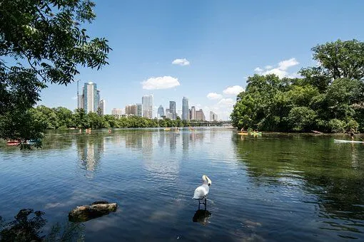

Founded in Austin TX through grassroots action in 2024, Trash Free Town Lake (TFTL) has grown to become one of the most effective
and wide-reaching environmental organizations in Austin.
Thanks to more than a hundred members and the dedicated efforts of our staff, we impact conservation of Town Lake and adjecant creeks.
